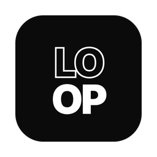

Loop for Mac
Your goals, to-dos and notes, right on your desktop.
Download LoopFree · Works on any Mac with macOS 11 or newer
Install it in four steps
- Open the downloadDouble-click Loop.dmg in your Downloads folder.
- Drag Loop into ApplicationsIn the window that opens, drag the Loop icon onto the Applications folder.
- Allow it onceOpen Loop from Applications. If your Mac says it can't open it, go to System Settings → Privacy & Security, scroll down, click Open Anyway, then Open. You only do this the first time.
- You're inLoop becomes your desktop. Click the Loop icon in the menu bar and choose Use Loop to edit your board. Press Esc when you're done.
Your board stays on your own Mac. Want to connect Canvas or Claude, show Loop on every screen or open it when your Mac starts? Those are all in the Loop menu bar menu.